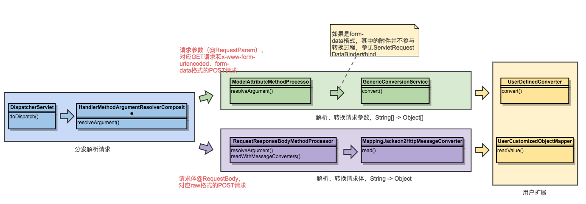

<!DOCTYPE HTML>
<html>
<head><meta name="generator" content="Hexo 3.9.0">
  <meta charset="utf-8">
  <meta http-equiv="X-UA-Compatible" content="IE=edge">
  <meta name="apple-mobile-web-app-capable" content="yes">
  <meta name="apple-mobile-web-app-status-bar-style" content="black">
  <meta name="google-site-verification" content>
  
  <title>【Spring】详解Spring MVC中不同格式的POST请求参数的数据类型转换过程</title>
  <meta name="author" content="Emac">
   <meta name="description" content="你也许写过很多Controller，那你可曾和我一样好奇最初字符串格式的HTTP请求参数如何转化成类型各异的Controller方法参数？

引子：假设现在有一个Long型的请求参数，需要转化为OffsetDateTime类型的方法参数，请问如何实现？
1 常见的POST请求格式首先，让我们看一下3">
  

  <meta property="og:title" content="【Spring】详解Spring MVC中不同格式的POST请求参数的数据类型转换过程">
  <meta name="viewport" content="width=device-width, initial-scale=1, maximum-scale=1">
  <meta property="og:site_name" content="Emac">
 <meta property="og:image" content="undefined">
  
  <link href="/apple-touch-icon-precomposed.png" sizes="180x180" rel="apple-touch-icon-precomposed">
  <link rel="alternate" href="/atom.xml" title="Emac" type="application/atom+xml">
  <link rel="stylesheet" href="//cdn.bootcss.com/bootstrap/3.3.6/css/bootstrap.min.css">
  <link rel="stylesheet" href="//cdn.bootcss.com/font-awesome/4.5.0/css/font-awesome.min.css">
  <link rel="stylesheet" href="/css/m.min.css">
  <link rel="icon" type="image/x-icon" href="/favicon.ico">
</head>
</html>
<body>
  <div id='wx_pic' style='display:none;'></div>
  <div id="main">
    <div class="behind">
      <div class="back">
        <a href="/" class="black-color"><i class="fa fa-times" aria-hidden="true"></i></a>
      </div>
      <div class="description">
        &nbsp;拾贝
      </div>
    </div>
    <div class="container">
      

  <article class="standard post">
    <div class="title">
      
  
    <h1 class="page-title center">
        【Spring】详解Spring MVC中不同格式的POST请求参数的数据类型转换过程
    </h1>
  


    </div>
    <div class="meta center">
      
<time datetime="2017-04-22T16:00:00.000Z">
  <i class="fa fa-calendar"></i>&nbsp;
  2017-04-23
</time>


    
    &nbsp;
    <i class="fa fa-tag"></i>&nbsp;
    <a href="/categories/backend/">backend</a>


    
    &nbsp;
    <i class="fa fa-tag"></i>&nbsp;
    <a href="/tags/原创/">原创</a>·<a href="/tags/Spring/">Spring</a>


    </div>
    <hr>
    <div class="picture-container">
      
    </div>
    <blockquote>
<p>你也许写过很多Controller，那你可曾和我一样好奇最初字符串格式的HTTP请求参数如何转化成类型各异的Controller方法参数？</p>
</blockquote>
<p>引子：假设现在有一个Long型的请求参数，需要转化为OffsetDateTime类型的方法参数，请问如何实现？</p>
<h2 id="1-常见的POST请求格式"><a href="#1-常见的POST请求格式" class="headerlink" title="1 常见的POST请求格式"></a>1 常见的POST请求格式</h2><p>首先，让我们看一下3种常见的POST请求格式：</p>
<ul>
<li><code>application/x-www-form-urlencoded</code>: 默认的表单提交格式，不支持文件</li>
<li><code>multipart/form-data</code>: 用于上传文件，同时也支持普通类型的参数</li>
<li><code>application/json</code>: 提交JSON格式的raw数据，适用于AJAX请求和REST风格的接口</li>
</ul>
<p>对于不同类型的请求格式，Spring有着不同的转换过程（从请求参数到方法参数），请看下图。</p>
<h2 id="2-Spring-MVC中的数据类型转换过程"><a href="#2-Spring-MVC中的数据类型转换过程" class="headerlink" title="2 Spring MVC中的数据类型转换过程"></a>2 Spring MVC中的数据类型转换过程</h2><p></p>
<p>从上图可以看到，Spring在解析请求参数时，会根据请求格式进入到不同的转换流程：</p>
<ul>
<li>如果是<strong>非raw请求</strong>（即包含参数数组），则交由ModelAttributeMethodProcessor处理，ModelAttributeMethodProcessor再调用Spring Converter SPI对请求参数逐个进行转换。</li>
<li>如果是<strong>raw请求</strong>，则交由RequestResponseBodyMethodProcessor处理，对于JSON格式的请求体，会再调用MappingJackson2HttpMessageConverter，最终通过ObjectMapper完成转换。</li>
</ul>
<p><i>*关于Spring Converter SPI的进一步解读，可参考<a href="http://jinnianshilongnian.iteye.com/blog/1723270" target="_blank" rel="noopener">这篇文章</a></i></p>
<p>回到开头的那个问题，答案就很简单了。如果是非raw请求，则需要实现一个自定义的Long-&gt;OffsetDatetime的Converter；如果是raw请求，则确保ObjectMapper中包含一个Long-&gt;OffsetDatetime的反序列化器，注册Jackon自带的JavaTimeModule即可。</p>
<h3 id="2-1-如何注册自定义Converter？"><a href="#2-1-如何注册自定义Converter？" class="headerlink" title="2.1 如何注册自定义Converter？"></a>2.1 如何注册自定义Converter？</h3><p>以Spring Boot为例，</p>
<p>1. 实现<code>org.springframework.core.convert.converter.Converter</code>接口生成一个自定义Converter。<br><figure class="highlight plain"><table><tr><td class="gutter"><pre><span class="line">1</span><br><span class="line">2</span><br><span class="line">3</span><br><span class="line">4</span><br><span class="line">5</span><br><span class="line">6</span><br><span class="line">7</span><br><span class="line">8</span><br><span class="line">9</span><br><span class="line">10</span><br><span class="line">11</span><br><span class="line">12</span><br></pre></td><td class="code"><pre><span class="line">public class OffsetDateTimeConverter implements Converter&lt;String, OffsetDateTime&gt; &#123;</span><br><span class="line"></span><br><span class="line">    @Override</span><br><span class="line">    public OffsetDateTime convert(String source) &#123;</span><br><span class="line">        if (!NumberUtils.isNumber(source)) &#123;</span><br><span class="line">            return null;</span><br><span class="line">        &#125;</span><br><span class="line"></span><br><span class="line">        Long milli = NumberUtils.createLong(source);</span><br><span class="line">        return OffsetDateTime.ofInstant(Instant.ofEpochMilli(milli), systemDefault());</span><br><span class="line">    &#125;</span><br><span class="line">&#125;</span><br></pre></td></tr></table></figure></p>
<p>2. 选择一个标注@Configuration注解的配置类，继承<code>org.springframework.web.servlet.config.annotation.WebMvcConfigurerAdapter</code>，然后覆盖addFormatters方法，注册自定义Converter。<br><figure class="highlight plain"><table><tr><td class="gutter"><pre><span class="line">1</span><br><span class="line">2</span><br><span class="line">3</span><br><span class="line">4</span><br><span class="line">5</span><br><span class="line">6</span><br><span class="line">7</span><br></pre></td><td class="code"><pre><span class="line">@Configuration</span><br><span class="line">public class WebConfig extends WebMvcConfigurerAdapter &#123;</span><br><span class="line">	@Override</span><br><span class="line">    public void addFormatters(FormatterRegistry registry) &#123;</span><br><span class="line">        registry.addConverter(new OffsetDateTimeConverter());</span><br><span class="line">    &#125;</span><br><span class="line">&#125;</span><br></pre></td></tr></table></figure></p>
<h3 id="2-2-如何注册自定义Jackson-Deserializer和Serializer？"><a href="#2-2-如何注册自定义Jackson-Deserializer和Serializer？" class="headerlink" title="2.2 如何注册自定义Jackson Deserializer和Serializer？"></a>2.2 如何注册自定义Jackson Deserializer和Serializer？</h3><p>以Spring Boot为例，</p>
<p>1. 继承<code>com.fasterxml.jackson.databind.JsonDeserializer</code>和<code>com.fasterxml.jackson.databind.JsonSerializer</code>生成自定义Jackson Deserializer和Serializer。</p>
<p>2. 继承<code>com.fasterxml.jackson.databind.module.SimpleModule</code>生成一个自定义Jackson Module，在其中添加自定义的Jackson Deserializer和Serializer。</p>
<p>3. 选择一个标注@Configuration注解的配置类，通过@Bean注解将自定义的Jackson Module注册为Bean，Spring Boot会自动发现和注册这个Module到默认的ObjectMapper中。</p>
<p>示例代码参见下一小节。</p>
<h2 id="3-更多示例"><a href="#3-更多示例" class="headerlink" title="3 更多示例"></a>3 更多示例</h2><h3 id="3-1-演示Controller"><a href="#3-1-演示Controller" class="headerlink" title="3.1 演示Controller"></a>3.1 演示Controller</h3><blockquote>
<p>演示3种常见的GET, POST请求参数的数据类型转换。</p>
</blockquote>
<figure class="highlight plain"><table><tr><td class="gutter"><pre><span class="line">1</span><br><span class="line">2</span><br><span class="line">3</span><br><span class="line">4</span><br><span class="line">5</span><br><span class="line">6</span><br><span class="line">7</span><br><span class="line">8</span><br><span class="line">9</span><br><span class="line">10</span><br><span class="line">11</span><br><span class="line">12</span><br><span class="line">13</span><br><span class="line">14</span><br><span class="line">15</span><br><span class="line">16</span><br><span class="line">17</span><br><span class="line">18</span><br><span class="line">19</span><br><span class="line">20</span><br><span class="line">21</span><br><span class="line">22</span><br><span class="line">23</span><br><span class="line">24</span><br><span class="line">25</span><br><span class="line">26</span><br><span class="line">27</span><br><span class="line">28</span><br><span class="line">29</span><br><span class="line">30</span><br></pre></td><td class="code"><pre><span class="line">@RestController</span><br><span class="line">@Validated</span><br><span class="line">public class VacationController implements IController &#123;</span><br><span class="line"></span><br><span class="line">    private static final List&lt;DayOfWeek&gt; WEEKENDS = Lists.newArrayList(DayOfWeek.SATURDAY, DayOfWeek.SUNDAY);</span><br><span class="line"></span><br><span class="line">    /**</span><br><span class="line">     * 转换GET请求参数</span><br><span class="line">     */</span><br><span class="line">    @RequestMapping(value = &quot;/isWeekend&quot;, method = RequestMethod.GET)</span><br><span class="line">    public JsonResult&lt;Boolean&gt; isWeekend(@Valid VacationRequest request) &#123;</span><br><span class="line">        return JsonResult.ok(WEEKENDS.contains(request.getStart().getDayOfWeek()));</span><br><span class="line">    &#125;</span><br><span class="line"></span><br><span class="line">    /**</span><br><span class="line">     * 转换POST请求体</span><br><span class="line">     */</span><br><span class="line">    @RequestMapping(value = &quot;/approve&quot;, method = RequestMethod.POST)</span><br><span class="line">    public JsonResult&lt;VacationApproval&gt; vacate(@RequestBody @Valid VacationRequest request) &#123;</span><br><span class="line">        return JsonResult.ok(VacationApproval.approve(request));</span><br><span class="line">    &#125;</span><br><span class="line"></span><br><span class="line">    /**</span><br><span class="line">     * 转换POST请求参数</span><br><span class="line">     */</span><br><span class="line">    @RequestMapping(value = &quot;/deny&quot;, method = RequestMethod.POST)</span><br><span class="line">    public JsonResult&lt;VacationApproval&gt; deny(@Valid VacationRequest request) &#123;</span><br><span class="line">        return JsonResult.ok(VacationApproval.deny(request));</span><br><span class="line">    &#125;</span><br><span class="line">&#125;</span><br></pre></td></tr></table></figure>
<h3 id="3-2-自定义Enum-Converter（用于非raw格式的请求）"><a href="#3-2-自定义Enum-Converter（用于非raw格式的请求）" class="headerlink" title="3.2 自定义Enum Converter（用于非raw格式的请求）"></a>3.2 自定义Enum Converter（用于非raw格式的请求）</h3><blockquote>
<p>基于特定属性的枚举数据类型转换器，如果无法找到，再尝试用枚举名进行转换。</p>
</blockquote>
<figure class="highlight plain"><table><tr><td class="gutter"><pre><span class="line">1</span><br><span class="line">2</span><br><span class="line">3</span><br><span class="line">4</span><br><span class="line">5</span><br><span class="line">6</span><br><span class="line">7</span><br><span class="line">8</span><br><span class="line">9</span><br><span class="line">10</span><br><span class="line">11</span><br><span class="line">12</span><br><span class="line">13</span><br><span class="line">14</span><br><span class="line">15</span><br><span class="line">16</span><br><span class="line">17</span><br><span class="line">18</span><br><span class="line">19</span><br><span class="line">20</span><br><span class="line">21</span><br><span class="line">22</span><br><span class="line">23</span><br><span class="line">24</span><br><span class="line">25</span><br><span class="line">26</span><br></pre></td><td class="code"><pre><span class="line">public static class CustomEnumConverter&lt;T extends Enum&lt;T&gt;&gt; implements Converter&lt;String, T&gt; &#123;</span><br><span class="line"></span><br><span class="line">    private Class&lt;T&gt; enumCls;</span><br><span class="line">    private String prop;</span><br><span class="line"></span><br><span class="line">    /**</span><br><span class="line">     * @param enumCls 枚举类型</span><br><span class="line">     * @param prop 属性名</span><br><span class="line">     */</span><br><span class="line">    public CustomEnumConverter(Class&lt;T&gt; enumCls, String prop) &#123;</span><br><span class="line">        this.enumCls = enumCls;</span><br><span class="line">        this.prop = prop;</span><br><span class="line">    &#125;</span><br><span class="line"></span><br><span class="line">    @Override</span><br><span class="line">    public T convert(String source) &#123;</span><br><span class="line">        if (StringUtils.isEmpty(source)) &#123;</span><br><span class="line">            return null;</span><br><span class="line">        &#125;</span><br><span class="line">        return Enums.getEnum(enumCls, prop, source).orElseGet(() -&gt;</span><br><span class="line">                Stream.of(enumCls.getEnumConstants())</span><br><span class="line">                        .filter(e -&gt; e.name().equals(source))</span><br><span class="line">                        .findFirst().orElse(null)</span><br><span class="line">        );</span><br><span class="line">    &#125;</span><br><span class="line">&#125;</span><br></pre></td></tr></table></figure>
<h3 id="3-3-自定义Module（用于raw格式的请求）"><a href="#3-3-自定义Module（用于raw格式的请求）" class="headerlink" title="3.3 自定义Module（用于raw格式的请求）"></a>3.3 自定义Module（用于raw格式的请求）</h3><blockquote>
<p>用于注册自定义Enum Serializer和Enum Deserializer。</p>
</blockquote>
<figure class="highlight plain"><table><tr><td class="gutter"><pre><span class="line">1</span><br><span class="line">2</span><br><span class="line">3</span><br><span class="line">4</span><br><span class="line">5</span><br><span class="line">6</span><br><span class="line">7</span><br><span class="line">8</span><br><span class="line">9</span><br><span class="line">10</span><br><span class="line">11</span><br><span class="line">12</span><br></pre></td><td class="code"><pre><span class="line">public class CustomEnumModule extends SimpleModule &#123;</span><br><span class="line"></span><br><span class="line">    /**</span><br><span class="line">     * @param prop 属性名</span><br><span class="line">     */</span><br><span class="line">    public CustomEnumModule(@NotNull String prop)&#123;</span><br><span class="line">        Asserts.notBlank(prop);</span><br><span class="line"></span><br><span class="line">        addDeserializer(Enum.class, new CustomEnumDeserializer(prop));</span><br><span class="line">        addSerializer(Enum.class, new CustomEnumSerializer(prop));</span><br><span class="line">    &#125;</span><br><span class="line">&#125;</span><br></pre></td></tr></table></figure>
<h4 id="3-3-1-自定义Enum-Serializer"><a href="#3-3-1-自定义Enum-Serializer" class="headerlink" title="3.3.1 自定义Enum Serializer"></a>3.3.1 自定义Enum Serializer</h4><blockquote>
<p>自定义枚举序列化器，查找特定属性并进行序列化，如果无法找到，则序列化为枚举名。</p>
</blockquote>
<figure class="highlight plain"><table><tr><td class="gutter"><pre><span class="line">1</span><br><span class="line">2</span><br><span class="line">3</span><br><span class="line">4</span><br><span class="line">5</span><br><span class="line">6</span><br><span class="line">7</span><br><span class="line">8</span><br><span class="line">9</span><br><span class="line">10</span><br><span class="line">11</span><br><span class="line">12</span><br><span class="line">13</span><br><span class="line">14</span><br><span class="line">15</span><br><span class="line">16</span><br><span class="line">17</span><br><span class="line">18</span><br><span class="line">19</span><br><span class="line">20</span><br><span class="line">21</span><br><span class="line">22</span><br><span class="line">23</span><br><span class="line">24</span><br><span class="line">25</span><br><span class="line">26</span><br><span class="line">27</span><br><span class="line">28</span><br><span class="line">29</span><br><span class="line">30</span><br><span class="line">31</span><br><span class="line">32</span><br><span class="line">33</span><br><span class="line">34</span><br></pre></td><td class="code"><pre><span class="line">@Slf4j</span><br><span class="line">public class CustomEnumSerializer extends JsonSerializer&lt;Enum&gt; &#123;</span><br><span class="line"></span><br><span class="line">    private String prop;</span><br><span class="line"></span><br><span class="line">    /**</span><br><span class="line">     * @param prop 属性名</span><br><span class="line">     */</span><br><span class="line">    public CustomEnumSerializer(@NotNull String prop) &#123;</span><br><span class="line">        Asserts.notBlank(prop);</span><br><span class="line"></span><br><span class="line">        this.prop = prop;</span><br><span class="line">    &#125;</span><br><span class="line"></span><br><span class="line">    @Override</span><br><span class="line">    public void serialize(Enum value, JsonGenerator gen, SerializerProvider serializers) throws IOException &#123;</span><br><span class="line">        if (value == null) &#123;</span><br><span class="line">            gen.writeNull();</span><br><span class="line">            return;</span><br><span class="line">        &#125;</span><br><span class="line">        try &#123;</span><br><span class="line">            PropertyDescriptor pd = getPropertyDescriptor(value, prop);</span><br><span class="line">            if (pd == null || pd.getReadMethod() == null) &#123;</span><br><span class="line">                gen.writeString(value.name());</span><br><span class="line">                return;</span><br><span class="line">            &#125;</span><br><span class="line">            Method m = pd.getReadMethod();</span><br><span class="line">            m.setAccessible(true);</span><br><span class="line">            gen.writeObject(m.invoke(value));</span><br><span class="line">        &#125; catch (IllegalAccessException | InvocationTargetException | NoSuchMethodException e) &#123;</span><br><span class="line">            throw new CommonException(e);</span><br><span class="line">        &#125;</span><br><span class="line">    &#125;</span><br><span class="line">&#125;</span><br></pre></td></tr></table></figure>
<h4 id="3-3-2-自定义Enum-Deserializer"><a href="#3-3-2-自定义Enum-Deserializer" class="headerlink" title="3.3.2 自定义Enum Deserializer"></a>3.3.2 自定义Enum Deserializer</h4><blockquote>
<p>自定义枚举反序列化器，根据特定属性进行反序列化，如果无法找到，再尝试用枚举名进行反序列化。</p>
</blockquote>
<figure class="highlight plain"><table><tr><td class="gutter"><pre><span class="line">1</span><br><span class="line">2</span><br><span class="line">3</span><br><span class="line">4</span><br><span class="line">5</span><br><span class="line">6</span><br><span class="line">7</span><br><span class="line">8</span><br><span class="line">9</span><br><span class="line">10</span><br><span class="line">11</span><br><span class="line">12</span><br><span class="line">13</span><br><span class="line">14</span><br><span class="line">15</span><br><span class="line">16</span><br><span class="line">17</span><br><span class="line">18</span><br><span class="line">19</span><br><span class="line">20</span><br><span class="line">21</span><br><span class="line">22</span><br><span class="line">23</span><br><span class="line">24</span><br><span class="line">25</span><br><span class="line">26</span><br><span class="line">27</span><br><span class="line">28</span><br><span class="line">29</span><br><span class="line">30</span><br><span class="line">31</span><br><span class="line">32</span><br><span class="line">33</span><br><span class="line">34</span><br><span class="line">35</span><br><span class="line">36</span><br><span class="line">37</span><br></pre></td><td class="code"><pre><span class="line">public class CustomEnumDeserializer extends JsonDeserializer&lt;Enum&gt; implements ContextualDeserializer &#123;</span><br><span class="line"></span><br><span class="line">    @Setter</span><br><span class="line">    private Class&lt;Enum&gt; enumCls;</span><br><span class="line"></span><br><span class="line">    private String prop;</span><br><span class="line"></span><br><span class="line">    /**</span><br><span class="line">     * @param prop 属性名</span><br><span class="line">     */</span><br><span class="line">    public CustomEnumDeserializer(@NotNull String prop) &#123;</span><br><span class="line">        Asserts.notBlank(prop);</span><br><span class="line"></span><br><span class="line">        this.prop = prop;</span><br><span class="line">    &#125;</span><br><span class="line"></span><br><span class="line">    @Override</span><br><span class="line">    public Enum deserialize(JsonParser parser, DeserializationContext ctx) throws IOException &#123;</span><br><span class="line">        String text = parser.getText();</span><br><span class="line">        return Enums.getEnum(enumCls, prop, text).orElseGet(() -&gt;</span><br><span class="line">                Stream.of(enumCls.getEnumConstants())</span><br><span class="line">                        .filter(e -&gt; e.name().equals(text))</span><br><span class="line">                        .findFirst().orElse(null)</span><br><span class="line">        );</span><br><span class="line">    &#125;</span><br><span class="line"></span><br><span class="line">    @Override</span><br><span class="line">    public JsonDeserializer createContextual(DeserializationContext ctx, BeanProperty property) throws JsonMappingException &#123;</span><br><span class="line">        Class rawCls = ctx.getContextualType().getRawClass();</span><br><span class="line">        Asserts.isTrue(rawCls.isEnum());</span><br><span class="line"></span><br><span class="line">        Class&lt;Enum&gt; enumCls = (Class&lt;Enum&gt;) rawCls;</span><br><span class="line">        CustomEnumDeserializer clone = new CustomEnumDeserializer(prop);</span><br><span class="line">        clone.setEnumCls(enumCls);</span><br><span class="line">        return clone;</span><br><span class="line">    &#125;</span><br><span class="line">&#125;</span><br></pre></td></tr></table></figure>
<p>完整代码可以参见我在GitHub上的<a href="https://github.com/emac/spring-boot-features-demo" target="_blank" rel="noopener">示例工程</a>。</p>
<h2 id="4-参考"><a href="#4-参考" class="headerlink" title="4 参考"></a>4 参考</h2><ul>
<li><a href="https://imququ.com/post/four-ways-to-post-data-in-http.html" target="_blank" rel="noopener">四种常见的 POST 提交数据方式</a></li>
<li><a href="http://docs.spring.io/spring-boot/docs/current/reference/htmlsingle/" target="_blank" rel="noopener">Spring Boot Reference Guide</a></li>
<li><a href="http://jinnianshilongnian.iteye.com/blog/1723270" target="_blank" rel="noopener">SpringMVC数据类型转换</a></li>
</ul>


  </article>
  </script>
    <script async src="https://dn-lbstatics.qbox.me/busuanzi/2.3/busuanzi.pure.mini.js">
  </script>
  <div class="busuanzi center">
    页阅读量:&nbsp;<span id="busuanzi_value_page_pv"></span>&nbsp;・&nbsp;
    站访问量:&nbsp;<span id="busuanzi_value_site_pv"></span>&nbsp;・&nbsp;
    站访客数:&nbsp;<span id="busuanzi_value_site_uv"></span>
  </div>


    </div>
  </div>
  <footer class="page-footer"><div class="clearfix">
</div>
<div class="right-foot container">
    <div class="firstrow">
        <a href="#top" >
        <i class="fa fa-arrow-right"></i>
        </a>
        © emacoo.cn 2015-2020
    </div>
    <div class="secondrow">
        <a href="https://github.com/gaoryrt/hexo-theme-pln">
        
        </a>
    </div>
</div>
<div class="clearfix">
</div>
</footer>
  <script src="//cdn.bootcss.com/jquery/2.2.1/jquery.min.js"></script>
<script src="/js/search.js"></script>
<script type="text/javascript">

// comments below to disable loading animation
function revealOnScroll() {
  var scrolled = $(window).scrollTop();
  $(".excerpt, .index-title, .index-meta, p").each(function() {
    var current = $(this),
      height = $(window).outerHeight(),
      offsetTop = current.offset().top;
    (scrolled + height + 50 > offsetTop) ? current.addClass("animation"):'';
  });
}
$(window).on("scroll", revealOnScroll);
$(document).ready(revealOnScroll)

// disqus scripts


// dropdown scripts
$(".dropdown").click(function(event) {
  var current = $(this);
  event.stopPropagation();
  $(current).children(".dropdown-content")[($(current).children(".dropdown-content").hasClass("open"))?'removeClass':'addClass']("open")
});
$(document).click(function(){
    $(".dropdown-content").removeClass("open");
})

// back to top scripts
$("a[href='#top']").click(function() {
  $("html, body").animate({ scrollTop: 0 }, 500);
  return false;
});


var path = "/search.xml";
searchFunc(path, 'local-search-input', 'local-search-result');

</script>

</body>
</html>
